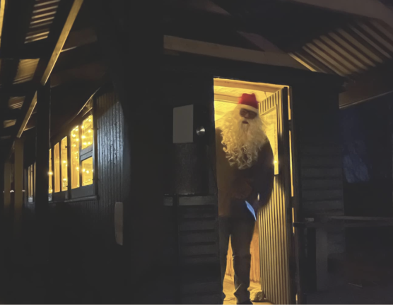
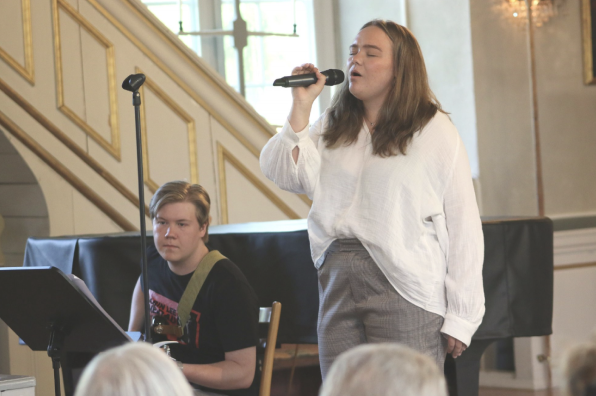

Händelser
12 januari 2025
Knuts fest 2025!
Knutsfest i bygdegården! Julen skulle dansas ut och 2024 års Älmebodabo skulle koras. KNAPPT 30 personer kom och en ring runt granen, varav 3 barn dansade friskt och gjorde vad de kunde! Till Årets Älmebodabor korades Anders Karlsson, mångsysslad idell kraft i Älmeboda och Martina Sandén, Krögare på byns Restaurang. Läs motiveringar under bilder nedan.
22 december 2024

God Jul!
God jul önskar Älmeboda sockenskommitté!
27 maj 2024

Inga och Bertil Holmbergs donationsfond
Den 25 maj delade styrelsen för Stiftelsen Inga och Bertil Holmbergs donationsfond ut stipendie från fonden till Ellen Uleskog, Dångebobördig. Ceremonin ägde rum i Södra Sandsjö kyrka i samband med Sandsjödagarna.